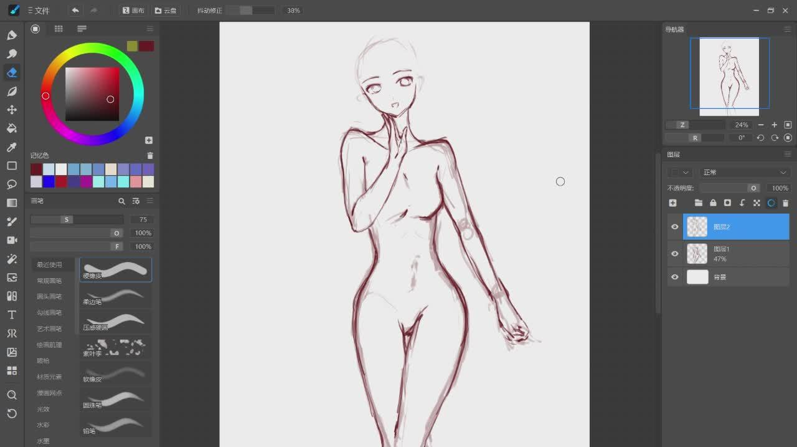
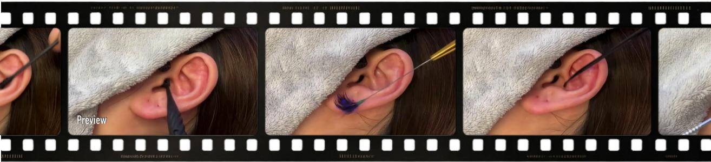

Case 1: Digital Drawing Screenshot

✓CoT-off: No violation
×CoT-on: Female nudity / Exposed genitalia
The model over-interprets the line sketch as policy-violating content.
Reasoning is powerful, but knowing when not to reason matters.
Bilibili Inc., Shanghai, China
Chain-of-thought reasoning is often assumed harmless, but in boundary-dense classification it can be actively harmful by increasing false positives on ambiguous non-violating inputs. We identify the overthinking effect and propose OREKI, an adaptive framework that uses K-fold cross-probing to label per-sample reasoning necessity and mixed-format fine-tuning to learn when to reason. Across four backbones and two tasks, OREKI preserves useful recall gains while suppressing false-positive inflation.
Characterize how CoT increases false positives on ambiguous inputs.
Reasoning amplifies weak cues through over-interpretation and unsupported inference.
Learn per-sample reasoning necessity to use CoT when beneficial.
Conceptual boundary illustration; points are not measured data.

The model over-interprets the line sketch as policy-violating content.

Reasoning amplifies weak surface cues into a false violation.
Adaptive reasoning through K-fold cross-probing and mixed-format fine-tuning
Named after Houtarou Oreki:
“I don’t do anything unnecessary.”
✓ 7 Best ↑ 1 Tied-best
Always-CoT to OREKI
Always-CoT to OREKI
Paper Table 3. Headline metrics: CivilComments / Qwen3.5-4B. Subgroup tradeoffs vary by model.
CivilComments · Qwen3.5-4B · Low-agreement samples.
| Method | F1 ↑ | CoT rate |
|---|---|---|
| Always-CoT | 0.792 | 100.0% |
| Never-CoT | 0.831 | 0.0% |
| Rate-matched random | 0.825 | 12.88% |
| Lightweight router (F1) | 0.810 | 50.95% |
| Lightweight router (rate) | 0.827 | 13.77% |
| OREKI | 0.851 | 12.88% |
Full moderation stream · Millions of submissions per day
confirmed-violation share
Production figures and relative reductions reported in presentation slide 12.
Use reasoning when it helps.
Skip it when it doesn’t.
@misc{dai2026whennot,
title={When Not to Think: Mitigating the Overthinking Effect in Content Moderation},
author={Dai, Yu and Zhang, Jielei and Ou, Yang and Yang, Zian and Yang, Run and Li, Xiang and Zhuang, Qingyao and Li, Peiyi and Gao, Longwen},
year={2026},
note={Manuscript}
}Manuscript entry; replace with official proceedings metadata.